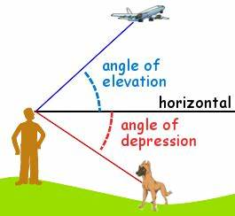
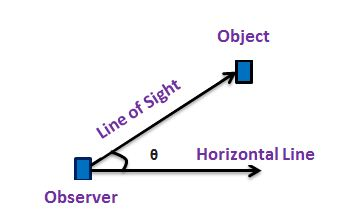

WHAT ARE IMPORTANT TERMS OF APPLICATIONS OF TRIGONOMETRY ?
First, we need to learn basic concepts to understand application of trigonometry. This includes line of sight, angle of elevation, angle of depression.

1) LINE OF SIGHT : It is the line drawn from the eyes of the observer to a point in the object where the person is viewing. 2) ANGLE OF ELEVATION : It is the angle formed by the line of sight with horizontal through the eyes of observer when the object is above the horizontal level.

3) ANGLE OF DEPRESSION : It is angle formed by the line of sight with the horizontal when the object is below the horizontal level.